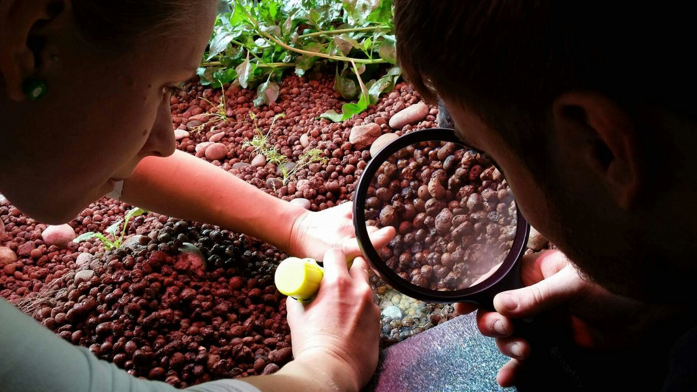
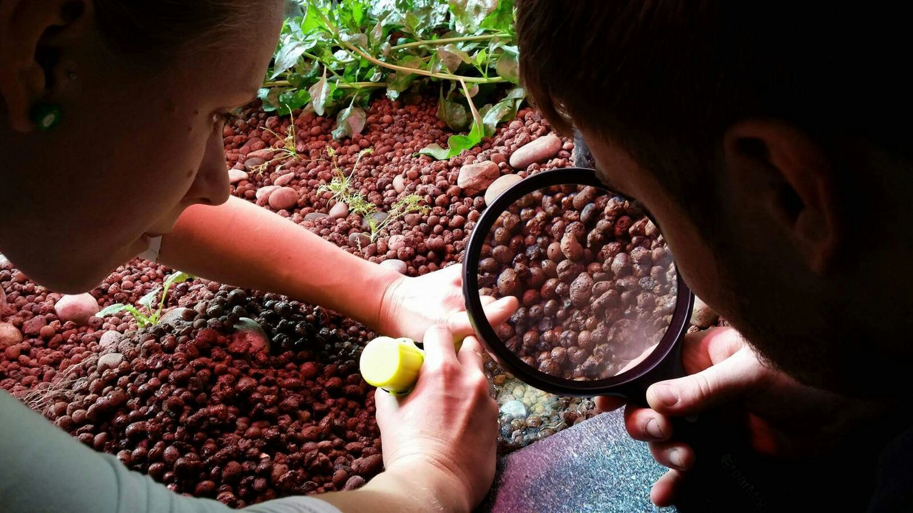
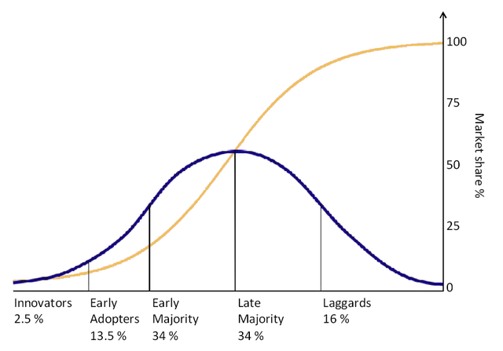
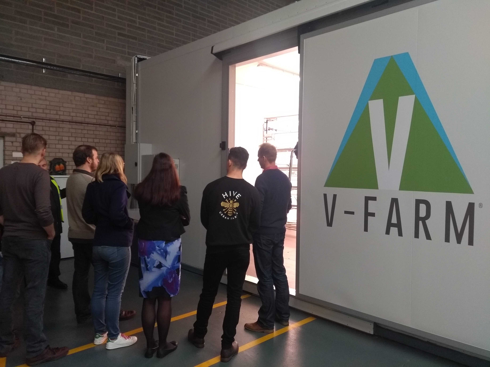
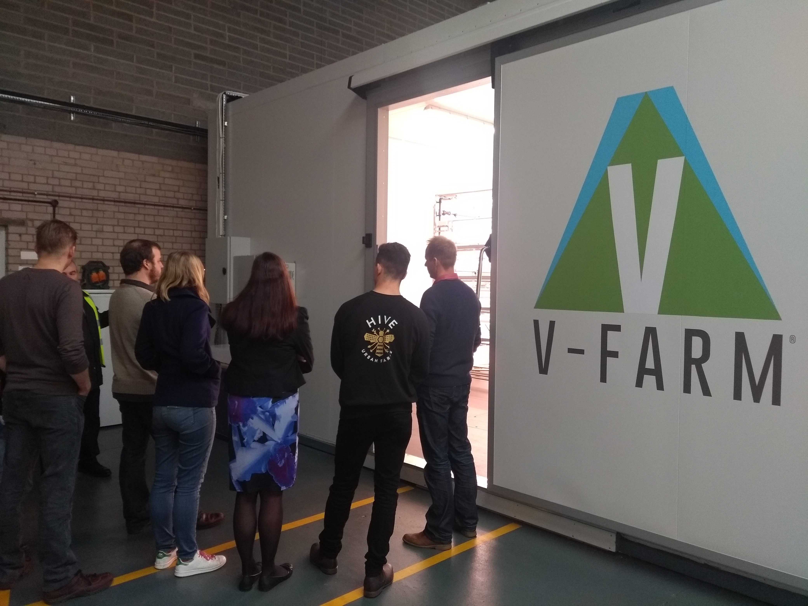

Technology Adoption


by small and medium sized agricultural businesses
Created by Michael Ratcliffe for The 2018 Nuffield Farming ConferenceMotivation

570 million farms in the world. More than 90% of farms are run by an individual or a family and rely primarily on family labour.
Technology Adoption
by small and medium sized agricultural businesses
Created by Michael Ratcliffe for The 2018 Nuffield Farming ConferenceWhere and why
Six Continents: Farmers, Aggtech, Academics, GO/NGO.


 

Technology adoption
In order for technology to be adopted by farmers it must be:
-Useful -Available -Affordable -Known about
Innovators and Laggards
Technology Doesn’t Help Every Farmer Pay The Bills
Is it useful
Cool does not mean useful Data does not mean valuable Technology should be used to make your life easier as a farmer


 

Computational Vision
Example

To be useful in Academia: 4 months To be useful to the farmer: 4 Days
A mismatch in aims
Academic aims: Original Research, Publications Farmer aims: Be useful, Better than current, Easy to use
Learnings Summarised
Ability
AI and computational vision are going to bring about massive changes in how we manage our farms. Lets make sure we use it to our advantage.
Development
Farmers need to be involved from day one of development.
Academics have knowledge and resources for bettering agg
Lets give our academics better metrics that promote real world impact over peer reviewed papers.
Adoption
Increase efforts to engage with lagers in farming, they will be better for it and so will agriculture in general.
We will only ever be judged by our worst farmer not our best.
Take home messages
-Be Aware: Network to stay in the know about technology developments.
-Know What You Want: Will the technology deliver tangible benefits.
-Don’t be Leapfrogged:Technological advancements are likely to develop rapidly, be cautious of investing in novel technology with long term ROI.


Michael Thomas Ratcliffe: Mike@Aquaponicslab.org
Test Text